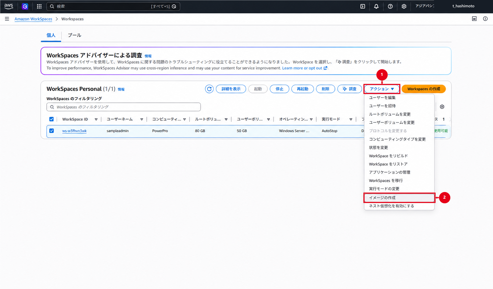

WorkSpaces カスタムイメージ・バンドル
Image Checkerの合格後にカスタムイメージとバンドルを作成し、検証用WorkSpaceで確認する
別AWSアカウントへの共有・コピー・再作成と、RDPを使用する場合の制約をまとめる
Amazon WorkSpacesカスタムイメージ・バンドル作成・共有手順
1. 文書の目的
本書では、Amazon WorkSpaces Personalで使用するカスタムイメージおよびカスタムバンドルを作成・更新し、他のAWSアカウントへ共有して展開する手順を記載する
対象範囲は次のとおり
- イメージ作成専用WorkSpaceの準備
- カスタムイメージの作成
- カスタムバンドルの作成
- カスタムイメージおよびカスタムバンドルの更新
- ADグループを利用した複数環境への展開管理
- 他のAWSアカウントへのカスタムイメージ共有
- 共有先AWSアカウントでのイメージコピーおよびバンドル作成
本書における「イメージの展開」は、WorkSpaceを1台作成する操作ではなく、カスタムイメージを他のAWSアカウントへ共有し、共有先でコピーして利用可能にする一連の作業を指する
参照WorkSpaceおよび共有先の検証用WorkSpaceを作成する場合は、Amazon WorkSpaces作成・バンドル設定手順も併せて確認する
画像の提出方針
原本画像は本書と同じフォルダへ保存し、赤枠・番号・矢印を付けた画像は、同じファイル名で注釈済みフォルダへ保存します。パスワード、アクセスキー、セッショントークンその他の認証情報は撮影しない
2. 本書で使用する値の区分
| 区分 | 意味 |
|---|---|
| 顧客環境・確認済み | 顧客パラメータシートまたは承認済み設計書で確認できる値 |
| 今回の検証値 | 検証環境の画面だけで確認した値 |
| 構築時確認 | 本番作業時にAWSコンソール、申請または設計書で確定する値 |
| 未確認 | 現在の資料では確定できず、推測してはならない値 |
3. イメージ、バンドル、ADグループおよびGPOの関係
| 項目 | 管理する内容 | 本手順での扱い |
|---|---|---|
| カスタムイメージ | Windows、Cドライブ上のアプリケーション、OS設定 | 共通の初期状態を保持する |
| カスタムバンドル | カスタムイメージ、コンピューティングタイプ、ルート／ユーザーボリューム | WorkSpace作成時に選択する |
| Directory ID／ADユーザー | WorkSpaceの所属先ディレクトリと利用者 | WorkSpaceごとに指定する |
| ADグループ | 環境ごとの展開対象ユーザー | 展開対象の抽出および管理に使用する |
| GPO | 利用開始後も変更するセキュリティ設定・ユーザー設定 | 対象OUまたはセキュリティグループへ適用する |
ADグループとカスタムイメージまたはカスタムバンドルを、Amazon WorkSpacesの標準機能で直接紐づけることはできません。WorkSpaceの作成時に指定する主な値は、Directory ID、ユーザー名およびBundle ID
複数環境へ展開する場合は、ADグループごとに使用するDirectory IDとBundle IDを対応表で管理し、グループメンバーを抽出して対象ユーザーごとにWorkSpaceを作成します。グループへの追加だけでWorkSpaceが自動作成されるものではないため、自動化する場合は、承認済みのPowerShell、AWS CLIまたはLambda等を別途用意する
ADグループ
↓ メンバーを抽出
環境別対応表（Directory ID／Bundle ID）
↓ ユーザーごとの作成要求
Amazon WorkSpaces Personal重要
同一ユーザーは、原則として1つのディレクトリにつき1台のWorkSpaceを使用します。同じユーザーへ複数環境のWorkSpaceを提供する場合は、ディレクトリ、ユーザー名またはアカウントを分ける設計を事前に確定する
4. 構築時に確定するパラメータ
4.1 イメージおよびバンドル
| 項目 | 設定値 | 状態 |
|---|---|---|
| 作業リージョン | アジアパシフィック（東京） | 顧客環境・確認済み |
| 作成元Directory ID | ［構築時確認］ | 現行コンソールで確認 |
| 参照WorkSpace ID | ［構築時確認］ | 作成後に記録 |
| カスタムイメージ名 | WindowsServer2022-Japanese-DCV |
今回の検証画面で確認 |
| カスタムイメージの説明 | Source wsb-391xpys5j - Windows Server 2022 Desktop Experience - Japanese - TPM - DCV - Mozilla Firefox |
今回の検証画面で確認 |
| カスタムイメージID | wsi-dvdtfbh29 |
今回の検証画面で確認 |
| カスタムバンドル名 | WindowsServer2022-Japanese-DCV-PowerPro |
今回の検証画面で確認 |
| カスタムバンドルID | wsb-757191hn0 |
今回の検証画面で確認 |
| OSベース | Windows Server 2022 | 顧客環境・確認済み |
| ストリーミングプロトコル | DCV（旧WSP） | 顧客環境・確認済み |
| コンピューティングタイプ | PowerPro | 顧客環境・確認済み |
| ルートボリューム | 80GB | 顧客環境・確認済み |
| ユーザーボリューム | 50GB | 顧客環境・確認済み |
| 旧版の保管期限 | ［構築時確認］ | ロールバック方針に従う |
イメージ名にはOS、言語およびストリーミングプロトコルを含めます。説明には、同じ構成を再現するために必要な作成元バンドルID、OSエディション、言語、TPM、プロトコルおよび主要アプリケーションを記録します。作成日はAWSコンソールに表示されるため、説明へ重複して記載しない
説明には、英字、数字、スペース、および().-/_だけを使用する
| 対象 | 命名例 |
|---|---|
| カスタムイメージ | WindowsServer2022-Japanese-DCV |
| カスタムバンドル | <システム名>-PowerPro-80-50-v01 |
4.2 他AWSアカウントへの共有
| 項目 | 設定値 | 状態 |
|---|---|---|
| 共有元AWSアカウントID | ［構築時確認］ | 12桁の値を作業申請と照合 |
| 共有先AWSアカウントID | ［構築時確認］ | 12桁の値を作業申請と照合 |
| 共有元リージョン | アジアパシフィック（東京） | 構築時確認 |
| 共有先リージョン | アジアパシフィック（東京） | 共有元と同一であることを確認 |
| 共有先イメージ名 | ［構築時確認］ | コピー時に確定 |
| 共有先バンドル名 | ［構築時確認］ | コピー完了後に確定 |
4.3 ADグループと展開先の対応
| 環境 | ADグループ | Directory ID | Bundle ID | 対象人数 | 状態 |
|---|---|---|---|---|---|
| ［環境1］ | ［構築時確認］ | ［構築時確認］ | ［構築時確認］ | ［構築時確認］ | 未確定 |
| ［環境2］ | ［構築時確認］ | ［構築時確認］ | ［構築時確認］ | ［構築時確認］ | 未確定 |
| ［環境3］ | ［構築時確認］ | ［構築時確認］ | ［構築時確認］ | ［構築時確認］ | 未確定 |
| ［環境4］ | ［構築時確認］ | ［構築時確認］ | ［構築時確認］ | ［構築時確認］ | 未確定 |
5. 前提条件
- 作業リージョンがアジアパシフィック（東京）であること
- 参照WorkSpaceが「利用可能」で、変更状態が「なし」であること
- 参照WorkSpaceのルートボリュームおよびユーザーボリュームが暗号化されていないこと
- Cドライブの空き容量が12GiBを超えていること
- イメージへ取り込むユーザープロファイルの容量が10GiB未満であること
- 参照WorkSpaceへ必要なWindows更新および承認済みアプリケーションが適用済みであること
- アプリケーションおよびユーザープロファイルがSysprepに対応していること
- アプリケーションがCドライブへインストールされていること
- ドメインユーザーの資格情報で起動するサービスが残っていないこと
- WorkSpaces、DCV、RDP、WinRM、PowerShellおよびAWSドライバー等の必須コンポーネントを削除していないこと
- ネットワークアダプターがDHCPを使用していること
- 参照WorkSpaceへ、意図しない追加ドライブが接続されていないこと
- AWS Image Checkerを実行できること
- 共有元と共有先のAWSアカウントIDが承認済みであること
- 共有元と共有先で同じリージョンを使用すること
- 共有先にイメージ、バンドルおよびWorkSpaceを作成できるIAM権限とクォータがあること
- BYOLイメージを使用する場合は、共有元と共有先の組織、請求およびBYOL要件を事前に確認していること
重要
暗号化されたWorkSpaceからカスタムイメージは作成できません。また、AWS公式手順では、カスタムバンドルのストレージボリュームを作成元イメージのストレージボリュームより小さくできないとされています。今回のバンドル作成画面では80GB／50GBを選択でき、バンドル一覧では「利用可能」まで確認しましたが、一覧だけでは実際のボリューム値を証明できません。顧客仕様として確定する前に、10章の詳細画面またはCLIで実値を確認する
6. イメージ作成専用WorkSpaceを準備する
6.1 専用WorkSpaceを作成する
- AWS提供の承認済みパブリックバンドルから、イメージ作成専用の参照WorkSpaceを1台作成
- 顧客仕様に合わせて、Windows Server 2022ベース、DCV、PowerPro、ルート80GBおよびユーザー50GBを選択
- ルートボリュームおよびユーザーボリュームの暗号化を選択していないことを確認
- 参照WorkSpace専用のユーザーを使用し、個人の業務データを保存しない
- WorkSpaceのステータスが「利用可能」になるまで待機
- WorkSpace ID、Directory ID、バンドルID、ボリュームサイズおよび暗号化状態を作業記録へ残す
参照WorkSpaceの作成操作は、Amazon WorkSpaces作成・バンドル設定手順を参照する
追加取得候補A：参照WorkSpaceの状態確認
参照WorkSpaceを選択し、ステータス、変更状態、バンドルおよび暗号化状態を確認できる画面を取得する
6.2 GPOの影響を分離する
- 参照WorkSpaceをイメージ作成専用OUへ配置
- イメージ作成を妨げる可能性がある本番用GPOを、参照WorkSpaceへ適用しない構成に
- 共通設定のうち、利用開始後も変更する項目はイメージへ直接埋め込まず、GPOで管理
- GPOを除外または変更した場合は、対象範囲と復旧方法を作業記録へ残す
既存の検証用sampleadmin WorkSpaceにはWorkSpaces用GPOを適用しているため、そのままイメージ作成元として使用せず、専用WorkSpaceまたは専用OUで影響を分離してから使用する
7. OS、アプリケーションおよび設定を準備する
- 参照WorkSpaceへサインイン
- 承認済みのWindows更新を適用
- 必要な業務アプリケーションをCドライブへインストール
- ライセンス方式が複製後の利用条件を満たすことを確認
- ドメインユーザーの資格情報で起動するWindowsサービスがないことを確認
- 不要な個人ファイル、ダウンロードファイル、ブラウザー履歴、一時ファイル、キャッシュおよび認証情報を削除
- 不要なユーザープロファイルを削除し、イメージへ取り込むプロファイルが10GiB未満であることを確認
- Cドライブに12GiBを超える空き容量があることを確認
- Windowsを再起動し、業務アプリケーション、ネットワークおよびDCV接続が正常であることを確認
- 作業完了後、WorkSpacesクライアントを切断
追加取得候補B～D：参照WorkSpace内の事前確認
承認済みアプリケーション一覧、Cドライブ空き容量およびユーザープロファイル容量を取得します。認証情報や個人データが表示されないことを確認する
8. AWS Image Checkerを実行する
- 参照WorkSpaceへ管理者権限でサインイン
- 管理者としてPowerShellを開き、次のコマンドでAWS Image Checkerを起動
Start-Process 'C:\Program Files\Amazon\ImageChecker.exe' -Verb RunAs- 「Run」を選択して検査を開始
- すべての項目が
PASSEDとなり、Validation successfulと表示されることを確認 - エラーまたは警告がある場合は、イメージ作成へ進まず、対象項目を修正してから再実行
- 検査完了後、WorkSpacesクライアントを切断
8.1 Staged AppX警告を最短で解消する
Image Checkerで次の警告が表示される場合がある
One or more AppX packages are in a staged state. This might cause a Sysprep error.
今回の検証では、個別パッケージの削除では警告が解消しませんでした。最短の復旧方法として、管理者PowerShellで全ユーザーのAppXパッケージを再登録する
Get-AppxPackage -AllUsers | ForEach-Object {
Add-AppxPackage -DisableDevelopmentMode -Register "$($_.InstallLocation)\AppXManifest.xml"
}コマンド完了後、Image Checkerを閉じて再起動し、「Run」を実行します。次の2点を確認できるまでイメージ作成へ進まない
- 一覧のすべての項目が
PASSEDである - 画面上部に
Validation successfulと表示される


本手順で採用しない復旧操作
今回解消しなかったRemove-AppxPackage、PsExecおよびSYSTEMタスクによる個別削除は、標準手順には掲載しません。まず上記の再登録を実施し、再検査後も失敗する場合だけ、Image CheckerのInfoとログを基に個別調査する
参考：
- 出典：AWS公式：Create a custom WorkSpaces image and bundle
- 出典：DevelopersIO：WorkSpacesのImage CheckerでAppX関連エラーが出た場合の対処
9. カスタムイメージを作成する
9.1 作成を開始する
情報：イメージを作成できるWorkSpaceの状態
作成元WorkSpaceのステータスはAvailable（利用可能）、変更状態はNone（なし）である必要があります。AutoStopにより停止している場合は、WorkSpaceを起動し、ステータスがAvailableになるまで待ってから操作する
EC2のAMIとは異なり、停止中のWorkSpaceからカスタムイメージは作成できません。ただし、利用者がWorkSpaceへログインしている必要はありません。イメージ作成中は対象WorkSpaceを使用できないため、利用者が切断していることを確認してから実行する
- AWSマネジメントコンソールへサインイン
- 作業リージョンがアジアパシフィック（東京）であることを確認
- Amazon WorkSpacesコンソールで「WorkSpaces」を開く
- イメージ作成元の参照WorkSpaceを選択
- 「アクション」から「イメージの作成」を選択
- 事前チェックが開始された場合は、完了するまで待機
- WorkSpaceの再起動が求められた場合は、利用者が接続していないことを確認して実行

図4は操作経路の説明画像です。構築時は、対象WorkSpace ID、ステータス、変更状態、暗号化およびボリュームが承認済みの値と一致することを画面上で再確認する
9.2 名前と説明を入力する
- カスタムイメージ名へ
WindowsServer2022-Japanese-DCVを入力 - 説明へ
Source wsb-391xpys5j - Windows Server 2022 Desktop Experience - Japanese - TPM - DCV - Mozilla Firefoxを入力 - 説明が、英字、数字、スペース、および
().-/_だけで構成されていることを確認 - 作成元バンドルID、OS、言語、TPM、プロトコルおよび主要アプリケーションを作業申請と照合
- 「イメージの作成」を押下

図4と図5は操作説明用に選定した画像であり、同一実行を時系列に撮影した一連の証跡としては扱いません。作業記録では、実際に選択したWorkSpace IDと作成されたイメージIDを別途対応付ける
9.3 作成完了を確認する
- 左ペインで「イメージ」を開く
- 対象イメージのステータスが作成中であることを確認
- 対象イメージのステータスが「利用可能」になるまで待機
- イメージ名、イメージID、OS、プロトコル、作成日時および所有者を確認
- 作成結果を作業記録へ残す
イメージ作成中は、作成元WorkSpaceを使用できない場合があります。業務用WorkSpaceを作成元にせず、専用の参照WorkSpaceを使用する
追加取得候補E：カスタムイメージ作成中
イメージ作成中の状態は未取得です。次回の作成時に、対象イメージ名と「作成中」ステータスが同時に確認できる画面を取得する

10. カスタムバンドルを作成する
- Amazon WorkSpacesコンソールの左ペインで「イメージ」を開く
- ステータスが「利用可能」の対象カスタムイメージを選択
- 「アクション」から「バンドルの作成」を選択
- 4.1で確定したバンドル名と説明を入力
- コンピューティングタイプで「PowerPro」を選択
- ルートボリュームに80GB、ユーザーボリュームに50GBを指定
- イメージ名、コンピューティングタイプおよびボリュームを再確認
- 「バンドルの作成」を押下
- 左ペインで「バンドル」を開き、作成したカスタムバンドルが表示されることを確認
- バンドル名、バンドルID、イメージID、OS、コンピューティングタイプおよびボリュームを作業記録へ残す
同じカスタムイメージから、コンピューティングタイプまたはストレージが異なる複数のカスタムバンドルを作成できます。ただし、ボリュームサイズは作成元イメージより小さくできず、作成後に縮小できない


図9の一覧では、バンドル名、Bundle ID、DCVおよび「利用可能」は確認できますが、コンピューティングタイプとボリュームは表示されません。次のCLI、またはバンドル詳細画面で実値を取得する
SOURCE_BUNDLE_ID='wsb-757191hn0'
aws workspaces describe-workspace-bundles \
--bundle-ids "$SOURCE_BUNDLE_ID" \
--region ap-northeast-1 \
--query 'Bundles[0].{State:State,ImageId:ImageId,Compute:ComputeType.Name,RootGiB:RootStorage.Capacity,UserGiB:UserStorage.Capacity}' \
--output table \
--no-cli-pager今回の顧客仕様に対する合格条件は、State=AVAILABLE、ImageId=wsi-dvdtfbh29、Compute=POWERPRO、RootGiB=80、UserGiB=50です。値が一致しない場合は、当該バンドルを展開に使用せず、作成元イメージとストレージ要件を確認して作り直する
11. カスタムバンドルを検証する
- 10章のCLIまたは詳細画面で、カスタムバンドルのImage ID、PowerProおよび80GB／50GBを確認
- WorkSpaces作成画面で「手動で設定」を選択し、作成したカスタムバンドル名とBundle IDを明示的に選択
- 作成したカスタムバンドルを使用し、検証用WorkSpaceを1台作成
- WorkSpaceのステータスが「利用可能」になるまで待機
- WorkSpacesクライアントから検証ユーザーでサインイン
- OS、DCV、PowerPro、ルート80GBおよびユーザー50GBが申請どおりであることを確認
- 承認済みアプリケーションが起動することを確認
- 対象OUへコンピューターオブジェクトが作成されていることを確認
gpupdate /forceを実行し、コンピューターおよびユーザーポリシーの更新が正常に完了することを確認gpresult /scope computer /rを実行し、意図したGPOが適用されていることを確認- 業務通信、再起動、サインアウトおよび再サインインを確認
- 検証結果が承認されるまで、既存の本番用Bundle IDを変更しない
「既存のWorkSpaceからコピー」は既存機の設定を複製する経路であり、新しいカスタムバンドルを選択した証跡にはなりません。本章の検証では使用しない
追加取得候補F・G：カスタムバンドルの検証
作成時にカスタムバンドルを選択した画面と、検証用WorkSpaceが「利用可能」になった画面を取得する
12. カスタムイメージおよびバンドルを更新する
既存のカスタムイメージは直接編集しません。OS、アプリケーションまたは設定を変更する場合は、新しい版のイメージを作成する
12.1 新しいイメージ版を作成する
- 現行カスタムバンドルから、更新作業専用WorkSpaceを作成
- OS、アプリケーションおよび設定を変更
- 7章のクリーンアップを実施
- 8章のImage Checkerを実行
- 9章の手順で、版を1つ進めた新しいカスタムイメージを作成
- 新旧イメージID、変更内容、作成日およびロールバック先を台帳へ記録
12.2 バンドルへ新しいイメージを反映する
安全に切り戻せるよう、新しい版のカスタムバンドルを作成する方法を優先する
- 新しいカスタムイメージから、新しい版のカスタムバンドルを作成
- 新しいバンドルで検証用WorkSpaceを1台作成
- 11章の試験を完了
- 承認後、4.3の環境別対応表を新しいBundle IDへ更新
- 旧バンドルは、承認済みの保管期限まで残す
既存バンドルの元イメージを更新する場合は、「バンドル」で対象バンドルを選択し、元イメージの編集から新しいイメージを指定します。この操作だけでは、既存WorkSpaceのOSやアプリケーションは更新されません。既存WorkSpaceへ反映する場合は、影響を確認したうえで再構築または再作成する
追加取得候補H：バンドル元イメージ更新
新しいイメージを選択するバンドル更新画面を取得します。新旧イメージIDを同じ証跡で識別できるようにする
13. ADグループを利用して複数環境へ展開する
13.1 対応表を確定する
- 環境ごとに展開対象となるADグループを確定
- 各ADグループへ、Directory IDおよび検証済みBundle IDを割り当てる
- 同一ユーザーが複数グループへ所属する場合の優先順位と除外条件を確定
- 4.3の対応表を作業責任者が承認
13.2 展開対象を抽出する
- 対象ADグループのメンバー一覧を取得
- 無効ユーザー、退職者、サービスアカウントおよび既存WorkSpace利用者を除外
- ユーザー名、所属グループ、Directory ID、Bundle IDおよび処理区分を展開一覧へ記録
- 同一ディレクトリ内でユーザーが重複していないことを確認
- 対象人数、WorkSpacesクォータおよびサブネットの空きIPアドレス数を確認
13.3 WorkSpacesを作成する
- 最初に各環境1名の検証ユーザーだけを対象に
- 検証用WorkSpaceが正常に作成されることを確認
- カスタムイメージ、カスタムバンドル、ログイン、GPOおよび業務アプリケーションを確認
- 検証結果の承認後、残りの対象ユーザーを展開
- APIまたはAWS CLIで一括作成する場合は、1回の要求数を上限以内に分割
- ユーザーごとのWorkSpace ID、作成結果およびエラー内容を記録
ADグループからユーザーを削除しても、既存WorkSpaceは自動削除されません。追加・削除・異動の運用では、ADグループ変更とWorkSpaceの作成・停止・終了を別の承認操作として管理する
14. カスタムイメージを他AWSアカウントへ共有する
カスタムバンドルは共有しません。共有元ではカスタムイメージを共有し、共有先でそのイメージをコピーして、新しいカスタムバンドルを作成する
14.1 共有元AWSアカウントで共有する
- 共有元AWSアカウントへサインイン
- 作業リージョンがアジアパシフィック（東京）であることを確認
- Amazon WorkSpacesコンソールの左ペインで「イメージ」を開く
- 共有するカスタムイメージを選択
- イメージ名、イメージID、ステータス、OSおよびプロトコルを作業申請と照合
- イメージ詳細の「共有アカウント」を開く
- 「アカウントを追加」を押下
- 共有先の12桁のAWSアカウントIDを入力
- 入力したアカウントIDを作業申請と再照合
- 「イメージを共有」を押下
- 共有アカウント一覧に対象AWSアカウントIDが表示されることを確認


外部提出時の注意
図11～図14は、AWSアカウントIDの先頭4桁だけを残し、残り8桁を*でマスキングしています。作業時は承認済みの12桁のAWSアカウントIDを入力し、作業申請と照合してください。外部提出資料には、マスキング済み画像だけを使用する
14.2 共有先AWSアカウントでコピーする
- 共有先AWSアカウントへサインイン
- 共有元と同じリージョンを選択
- Amazon WorkSpacesコンソールで、他のアカウントから共有されたイメージを表示
- 共有元AWSアカウントID、共有イメージ名およびイメージIDを作業申請と照合
- 対象イメージを選択し、「イメージのコピー」を押下
- 共有先で使用するイメージ名と説明を入力
- コピーを開始
- コピーしたイメージのステータスが「利用可能」になるまで待機
- コピー先で新しいイメージIDが発行されていることを確認
- コピー元イメージIDとコピー先イメージIDの対応を作業記録へ残す
共有先で作成したコピーは、共有元が共有を解除した後も共有先に残ります。共有元のイメージIDを、共有先のBundle IDまたはイメージIDとして転記しない
取得済みの図10～図14で確認できるのは、共有元アカウントでの共有設定および共有解除前の確認までです。図13および図14には「所有：自分」、共有アカウント一覧、「アカウントを追加」および「共有解除」が表示されているため、共有された側のAWSアカウントの画面ではありません。共有先での表示、コピー、コピー後の新しいイメージID、バンドル作成および検証用WorkSpace起動は、次の未取得画像を取得してから完了扱いとする
追加取得候補I～K：共有先でのイメージコピー
共有イメージの確認、コピー条件の入力およびコピー完了を取得する
14.3 共有先でカスタムバンドルを作成する
- 共有先でコピーしたイメージのステータスが「利用可能」であることを確認
- 10章の手順で、共有先アカウントのカスタムバンドルを作成
- 共有先のコンピューティングタイプおよびボリュームを承認済み設計と照合
- 共有先で新しく発行されたBundle IDを作業記録へ残す
- 共有先の検証ユーザーへWorkSpaceを1台作成
- 11章の試験を実施
- 承認後に、共有先の環境別対応表へBundle IDを登録
共有先がコピーしたイメージを、さらに別のAWSアカウントへ再共有することはできません。別の共有先が必要な場合は、元の所有アカウントから共有する
追加取得候補L・M：共有先でのバンドル作成と起動確認
共有先でのカスタムバンドル作成完了と、検証用WorkSpaceの利用可能状態を取得する
15. RDP接続を想定した運用上の注意
WorkSpacesクライアントを通常の接続方法とし、RDPは障害調査または保守作業に限定します。詳細はAmazon WorkSpaces RDP接続運用上の注意を参照する
- TCP 3389をインターネット全体へ公開しないこと
- 接続元を管理用EC2のセキュリティグループ、管理用サブネットまたは承認済みVPNの範囲へ限定すること
- AWSが自動作成した
<Directory ID>_workspacesMembersの必須ルールを削除しないこと - RDP用の許可は専用セキュリティグループまたは承認済み追加ルールで管理すること
- 接続対象のプライベートIPアドレスとWorkSpace IDを照合すること
- 接続ユーザーへ必要最小限の権限だけを付与すること
- 一時的に追加したTCP 3389のルールは、作業完了後に削除すること
- 50台以上の端末へ個別設定せず、Windows側の権限とファイアウォールはGPOで一元管理すること
16. 切り戻し
16.1 新しいイメージまたはバンドルに問題がある場合
- 新規展開を停止
- 対象のイメージID、Bundle ID、Directory ID、WorkSpace IDおよび事象を記録
- 環境別対応表を直前の検証済みBundle IDへ戻す
- 問題のあるバンドルから作成したWorkSpaceを特定
- 利用者および業務影響を確認して、再構築または再作成を実施
- 旧イメージおよび旧バンドルは、切り戻し完了まで削除しない
16.2 共有を解除する場合
- 共有先でコピー作業が進行中でないことを確認
- 共有先の担当者へ共有解除日時を連絡
- 共有元で対象イメージの共有アカウント一覧を開く
- 共有解除するAWSアカウントを選択
- ①選択したAWSアカウントIDを作業申請と照合し、②「共有解除」を押下

- 確認ダイアログで、①対象イメージ名とAWSアカウントIDを再確認
- 問題がなければ、②「共有解除」を押下

- 共有解除の完了通知を確認
- 共有アカウント一覧から対象AWSアカウントIDが消えたことを確認
- 共有解除前に共有先で作成されたコピーは残るため、必要に応じて共有先へ削除を依頼
図13は共有解除対象を選択した状態、図14は確認ダイアログを表示した状態です。いずれも共有解除完了そのものの証跡ではありません。完了証跡とする場合は、成功通知または対象AWSアカウントIDが一覧から消えた画面を追加取得する
共有元イメージを削除する場合は、すべてのAWSアカウントへの共有を解除し、依存するバンドルおよびWorkSpaceがないことを確認する
17. 作業完了チェックリスト
| 確認項目 | 結果 |
|---|---|
| 参照WorkSpaceが専用用途で、暗号化されていない | □ |
| Cドライブの空き容量が12GiBを超えている | □ |
| 対象ユーザープロファイルが10GiB未満である | □ |
| 不要な個人データ、キャッシュおよび認証情報を削除した | □ |
| Image Checkerが正常に完了した | □ |
| カスタムイメージが「利用可能」になった | □ |
| イメージ名、イメージIDおよび版を台帳へ記録した | □ |
| カスタムバンドルのPowerPro、80GB／50GBを確認した | □ |
| カスタムバンドルから検証用WorkSpaceを作成した | □ |
| アプリケーション、DCV、GPO、再起動およびログインを確認した | □ |
| ADグループ、Directory IDおよびBundle IDの対応表を承認した | □ |
| 同一ユーザーの重複と既存WorkSpaceを確認した | □ |
| 共有先AWSアカウントIDを作業申請と照合した | □ |
| 共有元と共有先のリージョンが一致する | □ |
| 共有先でイメージをコピーし、新しいイメージIDを記録した | □ |
| 共有先でカスタムバンドルと検証用WorkSpaceを作成した | □ |
| 旧イメージおよび旧バンドルを切り戻し用に保持した | □ |
| 画像にパスワードその他の認証情報が含まれていない | □ |
18. 画像取得一覧
掲載済み画像は本文の登場順に図1～図14へ統一した。未取得工程は図番号を予約せず、追加取得候補A～Mとして管理する
| 図 | ファイル名 | 取得内容 |
|---|---|---|
| 1 | 図1_ImageChecker_AppXステージ状態警告.png |
AppXパッケージのステージ状態警告 |
| 2 | 図2_ImageChecker全項目合格.png |
全項目がPASSEDとなった結果 |
| 3 | 図3_ImageChecker正常完了.png |
Validation successfulの表示 |
| 4 | 図4_カスタムイメージ作成開始.png |
対象WorkSpaceと作成操作 |
| 5 | 図5_カスタムイメージ作成条件入力.png |
イメージ名、説明、作成ボタン |
| 6 | 図6_カスタムイメージ利用可能確認.png |
利用可能ステータス |
| 7 | 図7_カスタムバンドル作成開始.png |
対象イメージと作成操作 |
| 8 | 図8_カスタムバンドル設定.png |
名前、PowerPro、80GB／50GB |
| 9 | 図9_カスタムバンドル作成完了.png |
Bundle ID、DCV、利用可能状態 |
| 10 | 図10_共有対象イメージ選択.png |
共有元の対象イメージ |
| 11 | 図11_共有先AWSアカウント追加.png |
共有先アカウントIDと共有操作 |
| 12 | 図12_カスタムイメージ共有完了.png |
共有アカウント一覧 |
| 13 | 図13_共有解除対象AWSアカウント選択.png |
共有解除対象アカウントと共有解除操作 |
| 14 | 図14_カスタムイメージ共有解除確認.png |
共有解除前の最終確認ダイアログ |
| 追加取得候補 | 取得内容 | 状態 |
|---|---|---|
| A | 参照WorkSpaceの状態、バンドル、暗号化 | 未取得 |
| B | 承認済みアプリケーション | 未取得 |
| C | Cドライブ空き容量 | 未取得 |
| D | ユーザープロファイル容量 | 未取得 |
| E | カスタムイメージの作成中ステータス | 未取得 |
| F | 検証WorkSpaceでのカスタムバンドル選択 | 未取得 |
| G | 検証WorkSpaceの利用可能状態 | 未取得 |
| H | バンドルの元イメージ更新 | 未取得 |
| I | 共有先で共有イメージを確認 | 未取得 |
| J | 共有イメージのコピー条件 | 未取得 |
| K | 共有先でのコピー完了 | 未取得 |
| L | 共有先カスタムバンドル作成完了 | 未取得 |
| M | 共有先検証WorkSpaceの利用可能状態 | 未取得 |
19. 参考資料
- 出典：AWS公式：カスタムWorkSpacesイメージとバンドルを作成する
- 出典：AWS公式：カスタムイメージを共有または共有解除する
- 出典：AWS公式：カスタムイメージをコピーする
- 出典：AWS公式：カスタムバンドルとイメージを削除する
- 出典：DevelopersIO：WorkSpacesのImage CheckerでAppX関連エラーが出た場合の対処
Amazon WorkSpaces RDP接続運用上の注意
1. 文書の目的
本書では、Amazon WorkSpacesへRDP接続する場合の前提条件、接続手順およびセキュリティ上の注意を記載する
WorkSpacesクライアントを通常の接続方法とし、RDPは障害調査または保守作業に限定します。利用者の恒常的な接続方法としてRDPを使用しない
2. 前提条件
- 対象WorkSpaceと作業目的が承認済みであること
- 対象WorkSpaceのステータスが「利用可能」であること
- 接続元が管理用EC2、承認済み管理用サブネットまたはVPN配下であること
- 接続元から対象WorkSpaceのプライベートIPアドレスへ到達できること
- TCP 3389の接続元が必要最小限に限定されていること
- 対象Windowsでリモートデスクトップが有効であること
- Windows Defender Firewallで承認済みのRDP通信が許可されていること
- 接続ユーザーが
Remote Desktop UsersまたはAdministratorsの必要な権限を持つこと - 接続ユーザーへ「リモート デスクトップ サービスを使ったログオンを許可」が付与されていること
- 「リモート デスクトップ サービスを使ったログオンを拒否」の対象でないこと
- DNS、Kerberosおよびドメインコントローラーへ接続できること
- 作業完了後のTCP 3389ルール削除または恒久設定の確認方法が決まっていること
3. セキュリティ設計
- TCP 3389を
0.0.0.0/0または::/0へ公開しない - 接続元には、管理用EC2のセキュリティグループまたは承認済みの管理用CIDRを指定
- AWSが自動作成した
<Directory ID>_workspacesMembersの必須ルールを削除または置換しない - RDP用通信は、専用セキュリティグループまたは承認済み追加ルールで管理
- 一時的な許可ルールには、申請番号、用途および削除予定日を記録
- Windows側のRDP権限、ファイアウォールおよび接続グループはGPOで一元管理
重要
Trusted Device等のWorkSpacesクライアント向け制御だけでは、RDP接続を制御できません。RDPは、ネットワーク、Windows Firewall、ログオン権限およびADグループの各層で制御する
4. RDP接続を実施する
- Amazon WorkSpacesコンソールで対象WorkSpaceを開く
- WorkSpace ID、ユーザー、Directory ID、ステータスおよびプライベートIPアドレスを作業申請と照合
- 対象WorkSpaceのネットワークインターフェイスへ関連付けられたセキュリティグループを確認
- 接続元からTCP 3389を許可する専用ルールがあることを確認
- 管理用EC2または承認済み管理端末で「リモート デスクトップ接続」を起動
- コンピューターへ対象WorkSpaceのプライベートIPアドレスを入力
- 承認済みのドメインユーザーで接続
- 接続先のコンピューター名とWorkSpace IDが対応していることを確認
- 承認された調査または保守作業だけを実施
- 作業完了後にサインアウトし、RDPセッションが残っていないことを確認
- 一時的に追加したTCP 3389ルールを削除
- CloudTrail、Windowsイベントログおよび作業記録へ必要な結果を残す
5. 50台以上を管理する場合
各WorkSpaceへ個別にRDP設定を行いません。次の項目をGPOおよび承認済みの自動化で一元管理する
- 専用ADグループをローカルの
Remote Desktop Usersへ追加する設定 - 「リモート デスクトップ サービスを使ったログオンを許可」の設定
- 「リモート デスクトップ サービスを使ったログオンを拒否」の確認
- Windows Defender FirewallのRDP受信規則
- NLAおよびセッション制御
- 監査ログとログオン失敗の記録
グループポリシーの「制限されたグループ」を使用する場合は、既存メンバーを意図せず置換しないようにします。専用ADグループを追加するだけの場合は、グループポリシー基本設定の「ローカル ユーザーとグループ」等を使用し、既存メンバーを削除しない構成を優先する
WorkSpacesディレクトリへ追加セキュリティグループを関連付けた場合、その後に作成または再構築したWorkSpacesへの適用状態を確認します。既存WorkSpacesはネットワークインターフェイスの関連付けを個別または承認済みの自動化で確認する
6. トラブルシューティング
- 対象WorkSpaceが「利用可能」であることを確認
- 接続先IPアドレスが対象WorkSpaceのプライベートIPアドレスであることを確認
- 接続元から対象IPアドレスのTCP 3389へ到達できることを確認
- WorkSpaceのセキュリティグループとネットワークACLを確認
- Windows Defender FirewallのRDP規則を確認
- Remote Desktop Servicesが起動していることを確認
- 接続ユーザーのADグループとローカルグループを確認
- 許可および拒否のユーザー権利を確認
- DNS名前解決、時刻同期およびドメインコントローラーへの通信を確認
- WindowsイベントログのRDP、認証およびグループポリシー関連イベントを確認
7. 作業完了チェックリスト
| 確認項目 | 結果 |
|---|---|
| RDP利用目的と対象WorkSpaceが承認済みである | □ |
| WorkSpace ID、ユーザー、Directory IDおよびIPアドレスを照合した | □ |
| TCP 3389の接続元を必要最小限に限定した | □ |
| インターネット全体へTCP 3389を公開していない | □ |
| AWS自動作成SGの必須ルールを削除していない | □ |
| 接続ユーザーのADグループとログオン権限を確認した | □ |
| 接続先コンピューター名を確認した | □ |
| 作業完了後にサインアウトした | □ |
| 一時的なTCP 3389ルールを削除した | □ |
| 作業結果と監査ログを保存した | □ |
8. 画像取得一覧
| 図 | ファイル名 | 取得内容 |
|---|---|---|
| 1 | 図1_RDP接続対象WorkSpace確認.png |
WorkSpace ID、ユーザー、ステータス、プライベートIP |
| 2 | 図2_RDP用セキュリティグループ確認.png |
対象SGとTCP 3389の接続元 |
| 3 | 図3_RDP接続先入力.png |
対象WorkSpaceのプライベートIP |
| 4 | 図4_RDP接続完了.png |
接続先コンピューター名 |
| 5 | 図5_RDP作業完了確認.png |
セッション終了またはサインアウト |
| 6 | 図6_RDP一時ルール削除確認.png |
一時許可ルールの削除後状態 |